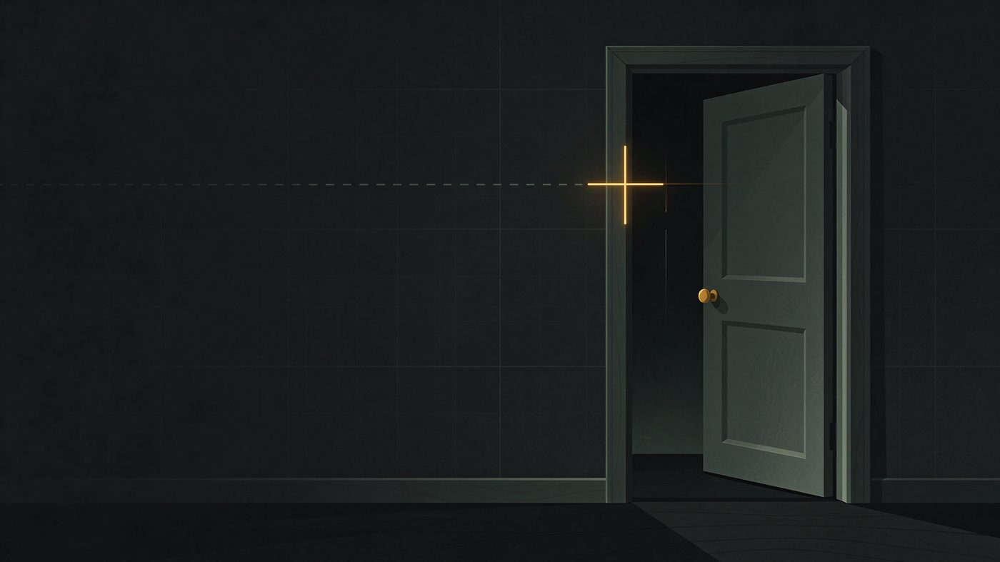

PRACTICE 01 / 03
Crosshair placement
Aim is not about speed. It is about where your crosshair already is when the fight starts — which is a decision you made long before you saw anyone.

What it means
THE IDEA IN ONE BREATH
Most duels are lost before the shot: the crosshair was resting on the floor, on a wall, or on nothing at all, and the first thing the hand has to do is travel upwards. Keeping it at head height removes that travel. It also removes the panic, because the correction is small enough that you can still think while making it.
The second half is the width. On a corner you do not need to cover the whole angle — only the slice of it a body will actually appear in. Wide swinging is what makes a player look fast and die early.
How I practise it
THREE RULES, NOT ONE HUNDRED
- Rule one Crosshair at head height before every peek
- Rule two Clear the corner, then hug the near wall
- Rule three Never swing further than a body width
- Daily drill Ten minutes of walking a map, aiming at door and box tops
- What good looks like The crosshair arrives before the enemy does
Read the other two
SAME ORDER I LEARNED THEM
The crosshair should be bored before the round begins.